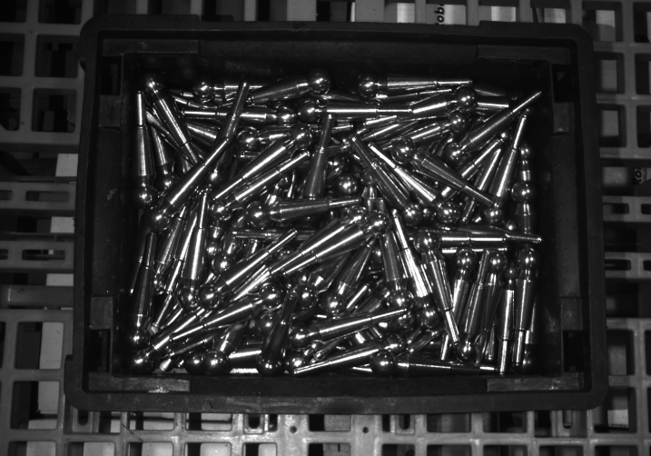
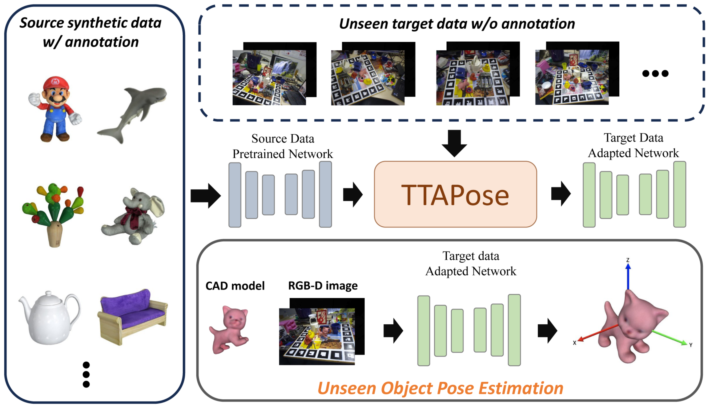
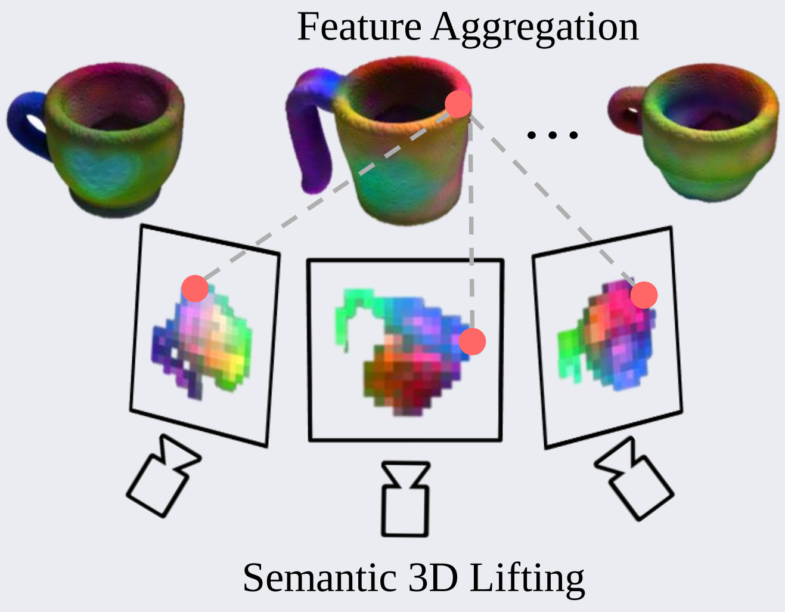
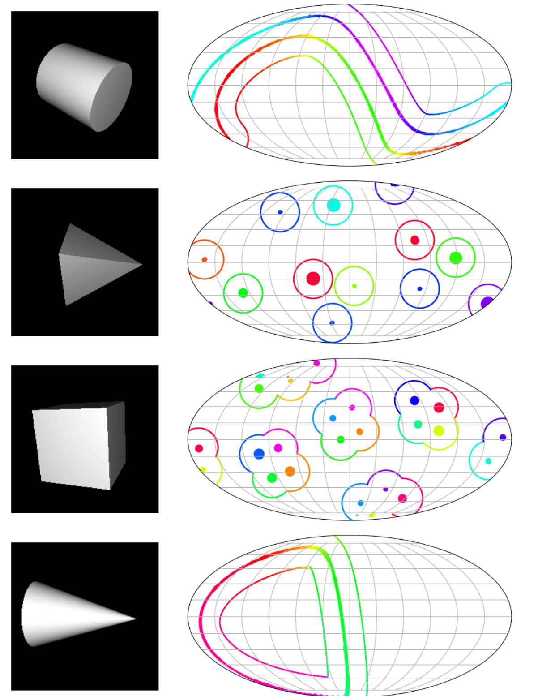
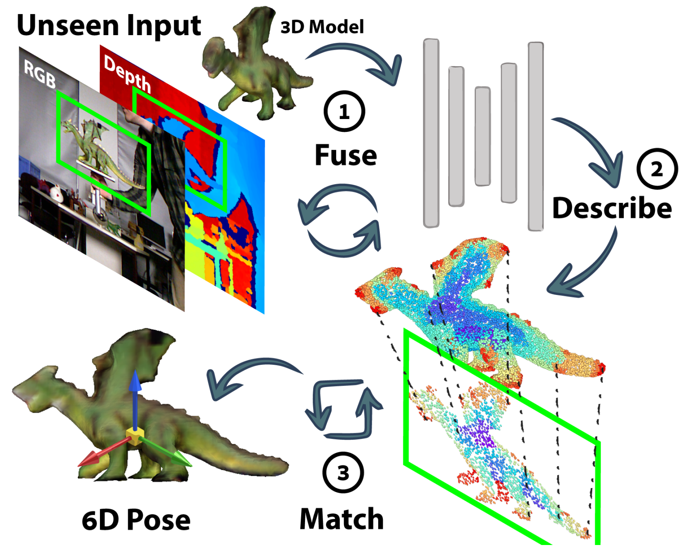
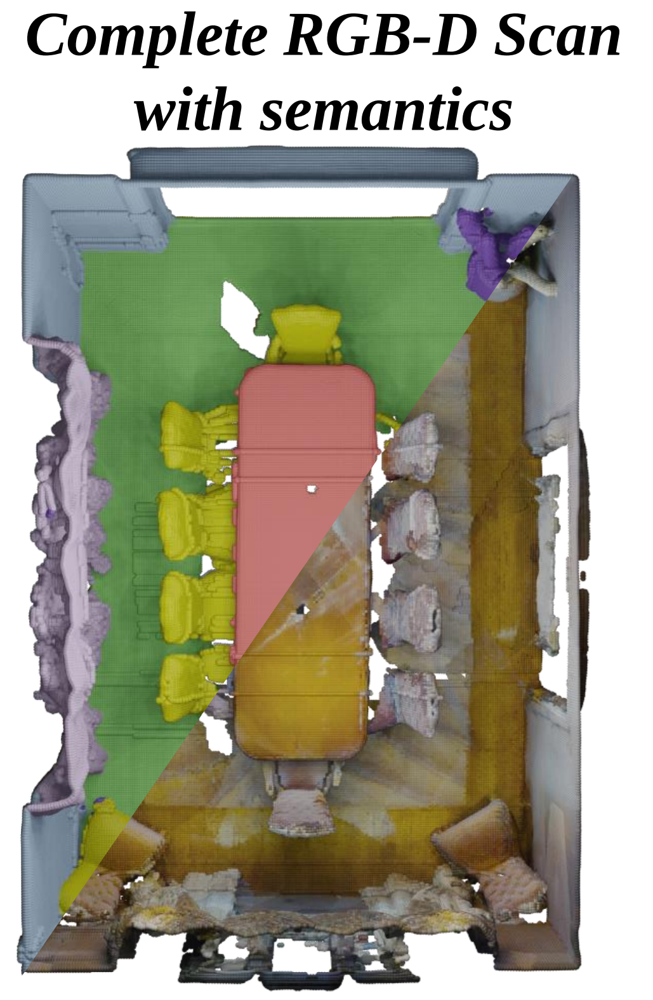
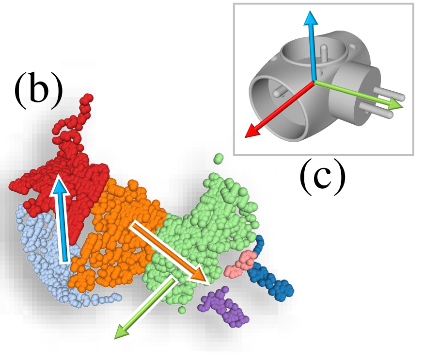
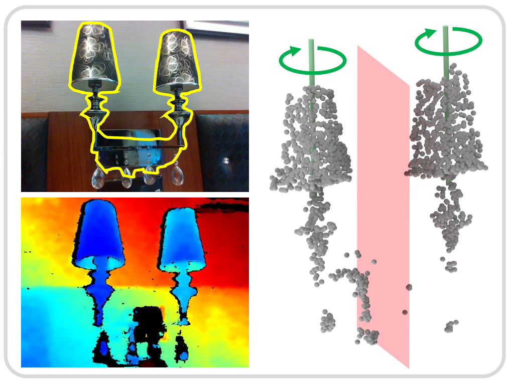

🧠 About Me
I am a PhD researcher at Technical University of Munich(TUM), Chair for Computer Aided Medical Procedure (CAMP), specializing in computer vision. I am currently working with Prof. Nassir Navab, PD Dr. Slobodan Ilic and Dr. Benjamin Busam. I also work closely with Peter KT Yu, CTO of XYZ Robotics. My research is focused on enabling intelligent machines to perceive, understand, and interact with their environment.
🔬 Research Interests
- 3D Vision & Scene Understanding
- Vision for Robotic Manipulation
- Multi-modal representation Learning
- Open-Vocabulary Vision Systems
🎓 Professional Activities
Co-organized Workshops and Challenges
- BOP Challenge 2025, joint with 10th International Workshop on Recovering 6D Object Pose (R6D) at ICCV 2025
- TRICKY Challenge 2025, joint with ICCV 2025 Workshop on Transparent & Reflective objects In the wild Challenges
Reviewing
- Conference Reviewer: CVPR, ECCV, ICCV, NeurIPS
- Journal Reviewer: IEEE T-PAMI, IJCV, IEEE RA-L
Teaching Assistant
- Introduction to Deep Learning(IN22346), TUM, WS 2021/2022
- Introduction to Deep Learning(IN22346), TUM, WS WS 2022/2023
- Praktikum on 3D Computer Vision (IN2106, IN4313), TUM, WS 2023/2024
- Master-Seminar - Modern Computer Vision Methods (IN2107, IN4486), TUM, WS 2023/2024
- Bachelor-Praktikum - Foundations in 3D Computer Vision (IN0012), TUM, SS 2024
- Master-Praktikum - Advanced Topics in 3D Computer Vision (IN2106, IN4023), TUM, SS 2024
- Master-Seminar - Modern Computer Vision Methods (IN2107, IN4486), TUM, WS 2024/2025
- Praktikum on 3D Computer Vision (IN2106, IN4313), TUM, WS 2024/2025
- Master-Praktikum - Advanced Topics in 3D Computer Vision (IN2106, IN4023), TUM, SS 2025
📚 Selected Publications

XYZ-IBD: A High-precision Bin-picking Dataset for Object 6D Pose Estimation Capturing Real-world Industrial Complexity

TTAPose: Test-Time Adaptation for Unseen Object Pose Estimation

GCE-Pose: Global Context Enhancement for Category-level Object Pose Estimation

Alignist: CAD-Informed Orientation Distribution Estimation by Fusing Shape and Correspondences

MatchU: Matching Unseen Objects for 6D Pose Estimation from RGB-D Images

SSR-2D: Semantic 3D Scene Reconstruction from 2D Images

StablePose: Learning 6D Object Poses from Geometrically Stable Patches

SymmetryNet: Learning to Predict Reflectional and Rotational Symmetries of 3D Shapes from Single-View RGB-D Images
Supervised Student Projects
- Weihang Li and Hongli Xu: GCE-Pose (CVPR25)
- Emrah Dogan: Joint Optimization of Segmentation and Pose Estimation (ongoing)
- Jiaqi Hu: Anything 6D: Generative Semantic Prior for 6D Pose Estimation (ongoing)
- Hongli Xu: ArticGS: Articulated Object GS-Reconstruction (ongoing)
- Cuong Van Dam: Unseen Object Segmentation for Industrial Bin-picking (finished)
- Haoqing Wu: 6-DoF Pose Estimation with Diffusion Models (finished)